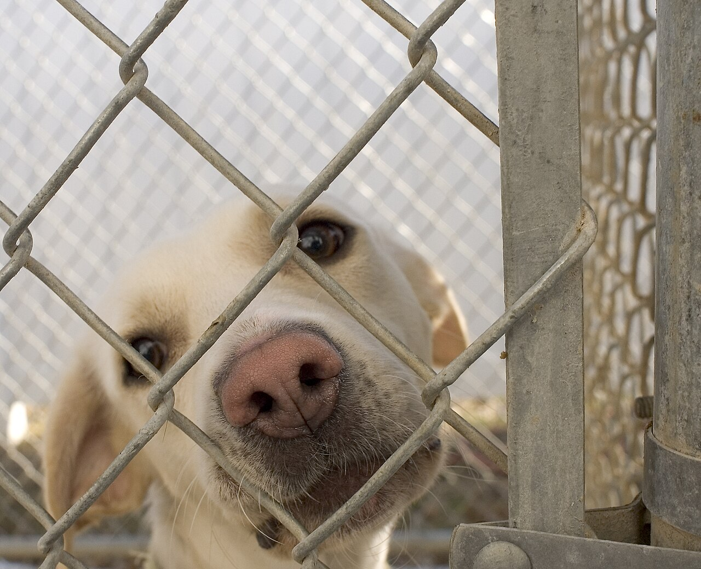
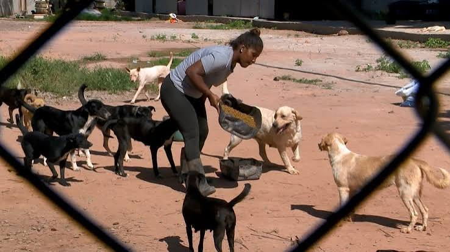

Projetos

Conheça Nossos Projetos!
Feiras de Adoção Mensais
Eventos presenciais realizados em parceria com empresas e estabelecimentos locais em Londrina. É o momento onde a comunidade pode conhecer os animais resgatados pessoalmente e passar pelo nosso processo criterioso de entrevista para a adoção responsável.
Conscientização e Vitrine Digital
Utilizamos o poder das redes sociais para educar a população sobre o bem-estar animal e a guarda responsável. Nossos perfis digitais funcionam como uma plataforma ativa de divulgação das histórias, fotos e necessidades dos animais que buscam um novo lar.
Faça Parte da Nossa Corrente do Bem!

Adote um Amigo!
A maior ajuda que podemos receber é encontrar uma família amorosa para nossos cães e gatos. Ao adotar, você transforma uma vida e nos ajuda a manter a sustentabilidade do projeto
Seja um Lar Temporário!
Como não possuímos abrigo próprio, contamos com corações solidários que possam acolher temporariamente um animal em fase de tratamento ou transição até que ele seja adotado.
Compartilhe Nossa Causa!
O engajamento digital salva vidas. Seguir nossas redes sociais, interagir e compartilhar os posts de adoção faz com que os animais tenham muito mais chances de encontrar um lar rapidamente.